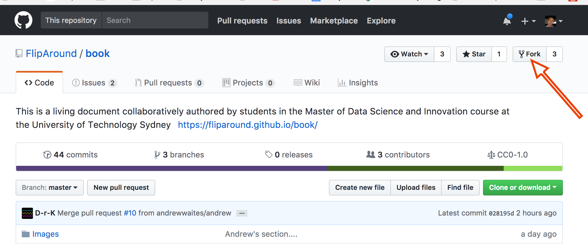
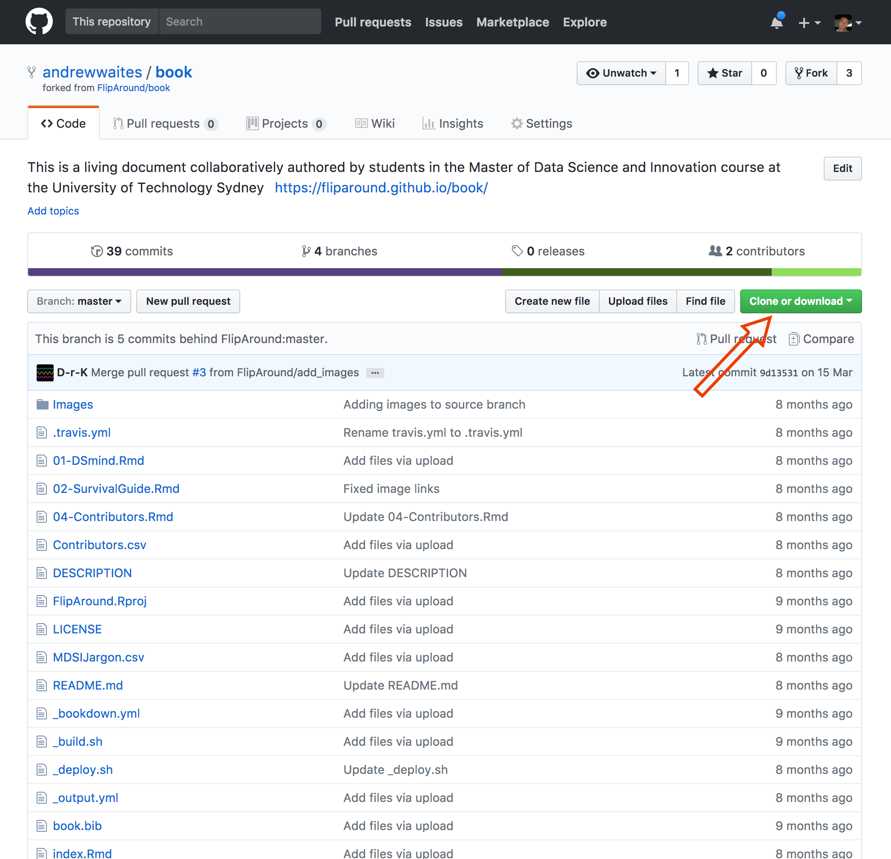
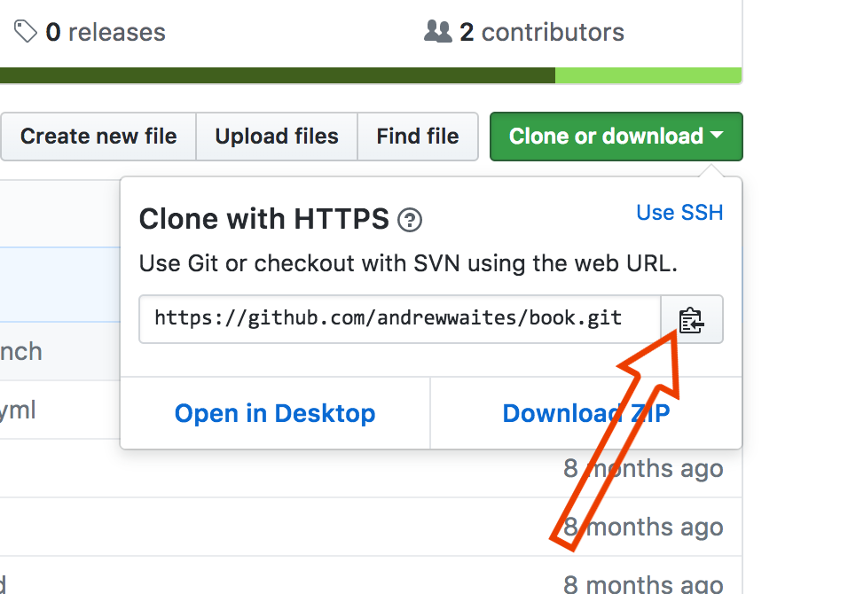

Chapter 5 Contributors to FlipAround
| What | Who.did.it.for.you |
|---|---|
| FlipAround Team | Zherish Opperman; Detlev Kerkovius; Rory Angus; Dorotea Baljevic; Herry Basuki |
| Editorial | Zherish Opperman; Detlev Kerkovius |
| Content | Zherish Opperman; Detlev Kerkovius; Amela Peric; Theresa Anderson; Andrew Waites; Corinna Mittmann |
| Layout | Zherish Opperman; Detlev Kerkovius; Amela Peric; Theresa Anderson |
| Integrations | Perry Stephenson |
5.1 If you want to contribute
Go to the GitHub repo for more information…or follow the dummies guide below.
5.1.1 Install GIT on your computer
Easiest is to just google a way but this link will probably get you there and it is worth following the advice on telling Git about your keys and such so you don’t spend your life typing in passwords.
5.1.2 Create a Github Account
If you already have an account then ignore this, otherwise go to https://github.com/ and sign up for an account. You might want to use your UTS account - this may make it easier to pick up the GIT Student Pack
5.1.3 Make a Fork
This is your own little copy of the fliparound sources - you can play to your heart’s content with this without stuffing anyone up. To do this, log on to github then go to https://github.com/FlipAround/book which should look a bit like the image below - to make a fork just click on the icon indicated (I had to avoid putting it into my corporate repo but if you are new to Git it shouldn’t ask too many more questions - if it does, make a note and update this text once you have worked it out.)

Once the fork is done you will get a screen that looks much like the normal fliparound screen but the name on the repository (repo) will now be yours…. (see andrewwaites/book). Now you want to clone this so you have a local copy…see arrow.

On this screen that little icon will copy the link you need to do the clone on your own system.

5.1.4 Get Local
So now you can open a terminal window on your system and make a local copy of all the fliparound files in your favourite directory (aka folder) using “git clone” + Cmd+V (Paste the URL you just copied) - note that I am using a Mac (sorry if you are using Windows - very). Also, while you are there, create a new branch to work in - here called “andrew”
cd ~/Dropbox/Development
git clone https://github.com/andrewwaites/book.git
git checkout -b andrewThis should create a directory called “book” under your current directory. If you cd into that directory it will look a bit like this….note that the (andrew) in the prompt tells me what branch I am currently working in.
iMac:book: (andrew) > ls -la
total 312
drwxr-xr-x@ 32 andrewwaites staff 1088 13 Nov 13:53 .
drwxr-xr-x@ 25 andrewwaites staff 850 12 Nov 19:51 ..
-rw-r--r--@ 1 andrewwaites staff 6148 13 Nov 12:07 .DS_Store
-rw-r--r--@ 1 andrewwaites staff 28 7 Nov 21:34 .Rbuildignore
-rw-r--r--@ 1 andrewwaites staff 0 7 Nov 21:33 .Rhistory
drwxr-xr-x@ 4 andrewwaites staff 136 7 Nov 21:34 .Rproj.user
drwxr-xr-x@ 15 andrewwaites staff 510 13 Nov 13:55 .git
-rw-r--r--@ 1 andrewwaites staff 40 7 Nov 21:34 .gitignore
-rw-r--r--@ 1 andrewwaites staff 218 7 Nov 21:32 .travis.yml
-rw-r--r--@ 1 andrewwaites staff 11067 7 Nov 21:32 01-DSmind.Rmd
-rw-r--r--@ 1 andrewwaites staff 32513 12 Nov 11:42 02-SurvivalGuide.Rmd
-rw-r--r--@ 1 andrewwaites staff 13661 12 Nov 11:47 03-DataFutures.Rmd
-rw-r--r--@ 1 andrewwaites staff 2012 13 Nov 13:53 04-Contributors.Rmd
-rw-r--r--@ 1 andrewwaites staff 315 7 Nov 21:32 Contributors.csv
-rw-r--r--@ 1 andrewwaites staff 72 7 Nov 21:32 DESCRIPTION
-rw-r--r--@ 1 andrewwaites staff 277 7 Nov 21:32 FlipAround.Rproj
drwxr-xr-x@ 42 andrewwaites staff 1428 13 Nov 12:14 Images
-rw-r--r--@ 1 andrewwaites staff 6556 7 Nov 21:32 LICENSE
-rw-r--r--@ 1 andrewwaites staff 1073 7 Nov 21:32 MDSIJargon.csv
-rw-r--r--@ 1 andrewwaites staff 1431 7 Nov 21:32 README.md
drwxr-xr-x@ 11 andrewwaites staff 374 13 Nov 13:53 _book
-rw-r--r--@ 1 andrewwaites staff 67 7 Nov 21:32 _bookdown.yml
-rw-r--r--@ 1 andrewwaites staff 80 7 Nov 21:32 _build.sh
-rw-r--r--@ 1 andrewwaites staff 418 7 Nov 21:32 _deploy.sh
-rw-r--r--@ 1 andrewwaites staff 1098 7 Nov 21:32 _output.yml
-rw-r--r--@ 1 andrewwaites staff 303 7 Nov 21:34 book.Rproj
-rw-r--r--@ 1 andrewwaites staff 268 7 Nov 21:32 book.bib
-rw-r--r--@ 1 andrewwaites staff 3428 12 Nov 11:43 index.Rmd
-rw-r--r--@ 1 andrewwaites staff 1053 7 Nov 21:32 packages.bib
-rw-r--r--@ 1 andrewwaites staff 161 7 Nov 21:32 preamble.tex
-rw-r--r--@ 1 andrewwaites staff 172 7 Nov 21:32 style.css
-rw-r--r--@ 1 andrewwaites staff 2443 7 Nov 21:32 toc.css5.1.5 Do Stuff
You can now open up R-Studio, set your working directory to this directory and make edits to the various .Rmd files (how to do markdown is a whole other discussion). Make sure that you put any images in the /Images subdirectory. Use the existing Rmd files as templates to show you how to do stuff.
So you will probably edit some existing files and maybe create some new image files.
5.1.6 Commit and Push
When you are happy with your work you are ready to send it back up the line. To do that you need to commit your changes, push them from your local machine to your fork on github then ask a friendly fliparound master (currently Detlev) to merge them in to the main book for you. Let’s start with those first 2 steps.
You need to identify what files you want to send in. Git will show you what files you have touched (in any way) to give you a hint. Use git status to see where things stand.
iMac:book: (andrew) > git status
On branch andrew
Your branch is up-to-date with 'origin/andrew'.
Changes not staged for commit:
(use "git add <file>..." to update what will be committed)
(use "git checkout -- <file>..." to discard changes in working directory)
modified: 04-Contributors.Rmd
Untracked files:
(use "git add <file>..." to include in what will be committed)
.Rbuildignore
.gitignore
Images/AfterFork.png
Images/BookClone.png
Images/GitFork.png
_book/
book.Rproj
no changes added to commit (use "git add" and/or "git commit -a")Before anything can be committed you need to stage files for the commit by git add. Lets add the 04-Contributors.Rmd (this file) and some images.
iMac:book: (andrew) > git add 04-Contributors.Rmd
iMac:book: (andrew) > git add Images/AfterFork.png Images/BookClone.png Images/GitFork.png
iMac:book: (andrew) > git status
On branch andrew
Your branch is up-to-date with 'origin/andrew'.
Changes to be committed:
(use "git reset HEAD <file>..." to unstage)
modified: 04-Contributors.Rmd
new file: Images/AfterFork.png
new file: Images/BookClone.png
new file: Images/GitFork.png
Untracked files:
(use "git add <file>..." to include in what will be committed)
.Rbuildignore
.gitignore
_book/
book.RprojNow markdown is not being quite as helpful as git because on your screen those Changes to be committed would be in green and the other unstaged files would be in red. You can ignore all those files shown above as untracked.
Now you need to commit your staged changes which will possibly throw you into some weird command line editor unless you add a message to the command line (really good idea if you don’t want to spend 20 minutes googling how to exit an EMACS editor). Then you can push that commit from your local branch to the remote (central) repo and check out the status.
iMac:book: (andrew) > git commit -m "A first cut at a dummies guide to changing fliparound via git repo..."
[andrew ff9b185] A first cut at a dummies guide to changing fliparound via git repo...
4 files changed, 157 insertions(+), 1 deletion(-)
create mode 100644 Images/AfterFork.png
create mode 100644 Images/BookClone.png
create mode 100644 Images/GitFork.png
iMac:book: (andrew) > git push origin andrew
Counting objects: 7, done.
Delta compression using up to 8 threads.
Compressing objects: 100% (7/7), done.
Writing objects: 100% (7/7), 739.86 KiB | 30.83 MiB/s, done.
Total 7 (delta 2), reused 0 (delta 0)
remote: Resolving deltas: 100% (2/2), completed with 2 local objects.
To https://github.com/andrewwaites/book.git
631724a..ff9b185 andrew -> andrewTime to go back to your browser and submit a pull request to have your changes merged into the big book.
5.1.7 Submit a Pull Request
So if you go to your github copy of all this stuff https://github.com/andrewwaites/book/pulls (well yours might have something different where this link says andrewwaites like your github username) then click on the big green button that says New Pull Request.
Figure 5.1: Wrong Branch
When you go to the page you will probably not see any changes to submit - don’t panic this is likely because you are on the master branch. Just change that right hand dropdown (beside your fork) to the name of the branch you created (in this case, andrew).
Figure 5.2: Start Pull Request
So now you should see a bunch of changes that you have made that you want to submit. If you press that Create Pull Request button again you will get an opportunity to put some comments in and the like….
Figure 5.3: Comments and Such
Once you fill out any comments and press the Submit Pull Request button again you will get a screen notifying you that the request has gone in but no further progress will be made until it is all accepted.
Figure 5.4: Pending Review
5.1.8 Now You Wait
All out of your hands now. Git will email you some updates as the review process progresses and once your changes have been merged and the deploy effected you will see your work appear in fliparound - congratulations and thanks for your efforts.